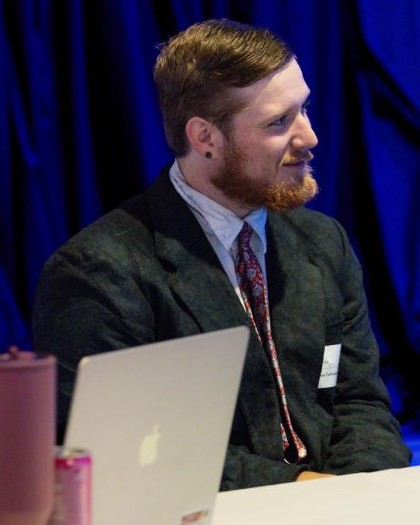

noah_rohlinger / about
Background behind my IT path
I'm Noah, an Information Technology student at Florida State University with a 4.0 GPA, graduating in May 2027. I'm looking for a 2027 internship in IT support, infrastructure or information security.
I learn by building, and I keep improving what I build. Jarvis, my local AI desktop assistant, has grown since Spring 2026 into a 67-tool system with a public v1.0.0 release.
Outside of class I'm a Communications Associate for FSU's Departments of Geography and Demography and the nursery manager at Dickerson Landscaping. My taekwondo school gave me its leadership certificate for how I taught the students under me.
Education
Education
Florida State University
B.S. Information Technology · Spring 2026 to May 2027 (expected)
4.0 GPA · President's List, Spring 2026
A 4.0 across a full course load in my first semester at Florida State.
Tallahassee State College
A.A. Information Technology · Spring 2023 to December 2025
Where I finished my associate degree before transferring to Florida State.
Honor societies
Tau Sigma National Honor Society
Lifetime member · FSU chapter · inducted 1 Oct 2026
The honor society for transfer students.
Omicron Delta Kappa
Member · FSU Circle · inducted Fall 2026
The National Leadership Honor Society.
Skills
Skills I can back up right now
My strongest current work is in C#/.NET, front-end web work, networking fundamentals, and technical communication.
Main tools I use
C# / .NET 8
Most active
My main development focus right now, especially for backend logic, APIs, and larger multi-part application work.
Shows up in Help Desk Sim and Jarvis
HTML / CSS / JavaScript
Current site work
Used to build and refine this portfolio, including responsive layouts, page structure, and small interactive features that make the site easier to use.
Shows up in Portfolio Website
Java
Project backed
Applied in LanSentinel for subnet scanning, device reachability checks, hostname lookup, and network-related logic.
Shows up in LanSentinel
SQL / Data Organization
Supporting experience
Supports how I think about structured information, database workflows, and organized data handling.
Python
Utility language
Useful for scripting, experimentation, and smaller automation or support tasks while I continue building my broader programming foundation.
Shows up in Matchob
C++
Coursework base
Part of the programming foundation that strengthened problem solving, logic, and working through structured assignments in school.
Also on the list: ASP.NET Core, Networking, Git / GitHub, Documentation.
Languages: English (native), Chinese (beginner conversational).
How I work
Teaching and leading others
Explaining a problem patiently and clearly, the skill my taekwondo leadership certificate recognized.
Customer communication
Built through customer-facing work that required patience, clarity, and reliability.
Ownership and accountability
Owning a job end to end and staying ahead of problems, as I do managing a nursery's stock on my own.
What I want to improve
The next step is not adding a longer list of tools. It is getting deeper with the ones I already use most: stronger C#/.NET work, better networking fluency, and clearer project explanations.
That is the direction I want this portfolio to keep moving in.
Certificates
Certificates
The ones with a digital copy open as a PDF.
The basics behind networks, servers and the environments IT teams support.
Root-cause thinking: preventing the same issue from coming back, not just closing one ticket.
IP addressing, connectivity and network structure, the same concepts behind LanSentinel.
Reading traffic to see how a problem shows up on the wire.
Adobe Certified Professional
2023
Illustrator and Photoshop.
Certificate in Game Design
George Mason University
An award listed on my resume.
Certificate of Leadership
ATA Songahm Taekwondo
A physical award with no digital copy. The story behind it is below.
Involvement
Clubs and leadership
At FSU
ACM
Association for Computing Machinery, FSU chapter.
ThinkAI
Student organization focused on artificial intelligence and machine learning.
AITP
Association of Information Technology Professionals.
HISA
Health informatics student organization, covering how IT and data work applies in healthcare settings.
Leadership through martial arts
My Certificate of Leadership from ATA Songahm Taekwondo is not a course I signed up for or a box I checked off. My instructors gave it to me because of how I was teaching the students under me and how I carried myself in the school, and they decided on their own that it was earned.
Teaching and coaching
I worked directly with students, breaking techniques down so they could actually follow them and adjusting how I explained things depending on who I was working with.
Setting the example
The recognition came from how I conducted myself day to day, not from a test score. In a school, the way you carry yourself is what the students copy.
Why it matters for IT
Teaching someone a technique they are struggling with is the same skill as walking a user through a problem they do not understand yet: patience, clear explanation, and staying steady when the other person is frustrated.
It was never issued digitally, but I can bring the original to an interview.
Timeline
The path so far, at a glance
A 2027 internship in IT support, infrastructure or information security.
- Oct 2026PresentedJarvis, to the FSU CCI Leadership Board
- 1 Oct 2026InductedTau Sigma National Honor Society
- Fall 2026InductedOmicron Delta Kappa, FSU Circle
- Fall 2026JoinedMatchob, as AI team lead
- 21 Sep 2026ShippedJarvis v1.0.0
- Aug 2026JoinedCommunications Associate, FSU Geography & Demography
- Jul 2026JoinedNursery Manager, Dickerson Landscaping
- May 2026ShadowedFlorida Blue Information Security Engineering, through FSUshadow
- Spring break 2026ShippedHelp Desk Sim
- 2026ShippedLanSentinel
- Spring 2026StartedJarvis
- Spring 2026JoinedFlorida State University
- Spring 2023StartedTallahassee State College
- 2019 to 2026EarlierTallahassee Nurseries, and service and labor roles